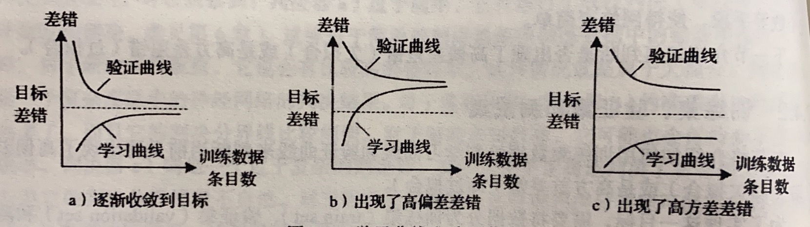
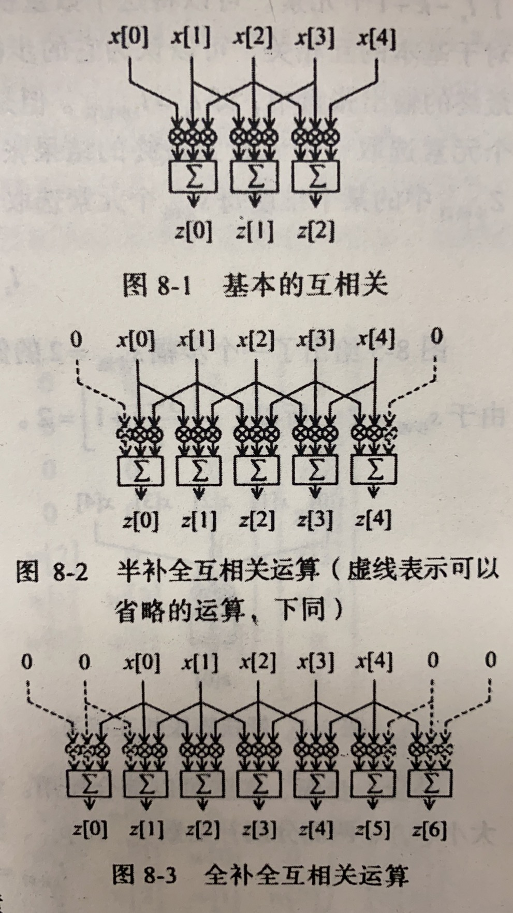
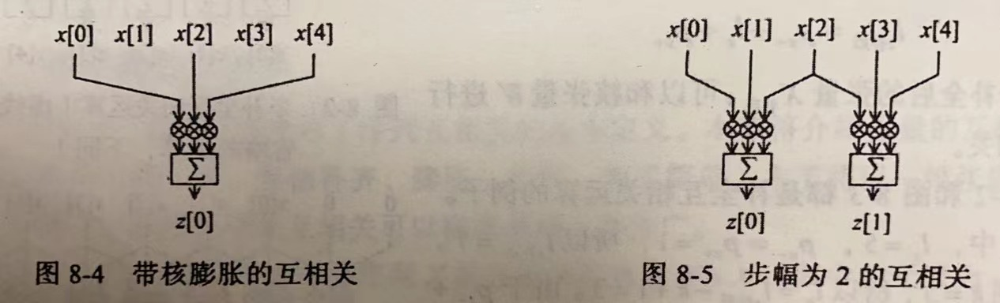
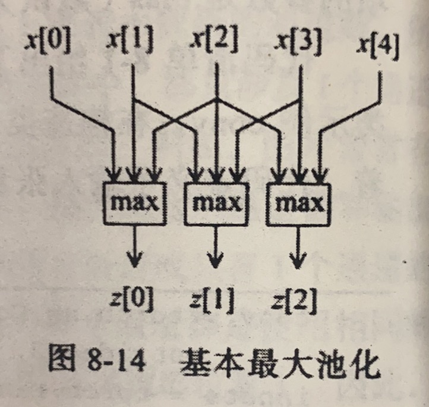
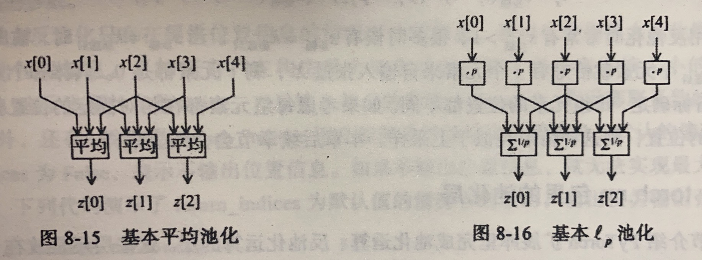
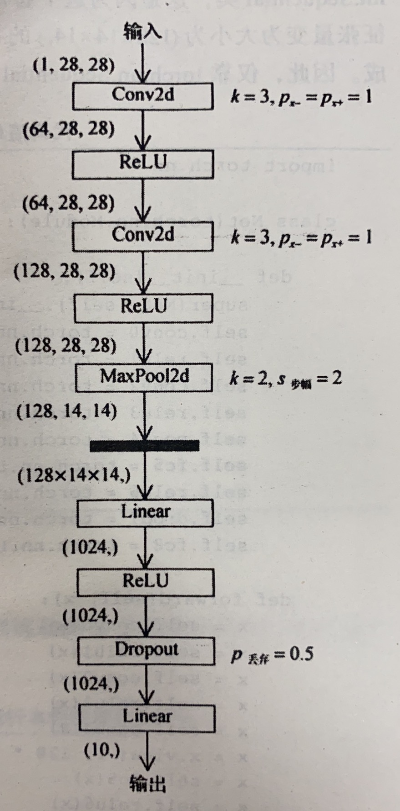

pytorch
创建网络的一种快捷方法：Sequential
net = torch.nn.Sequential(
torch.nn.Linear(STATE_SIZE, HIDDEN_SIZE),
torch.nn.ReLU(),
torch.nn.Linear(HIDDEN_SIZE, ACTION_SIZE),
)
2.1 构造张量的函数
torch.tensor() torch.zeros(), torch.zeros_like() torch.ones(), torch.ones_like() torch.full(), torch.full_like() 全填充为指定值 torch.empty(), torch.empty_like() torch.eye() torch.arange(), torch.range(), torch.linspace() torch.logspace() 等比 torch.rand(), torch.rand_like() 标准均匀 torch.randn(), torch.randn_like(), torch.normal() 标准正态 torch.randint(), torch.randint_like() torch.bernoulli() 两点分布 torch.multinomial() torch.randperm() {0,1,2,3...,n-1}的随机排列
2.2 重排张量元素
以下三种不会改变张量的实际位置（浅拷贝）
- reshape()
- squeeze()：消除张量中大小为 的维度，
t.squeeze() - unsqueeze()：添加一个大小为 的维度，
t.unsqueeze(dim=2)
2.3 张量扩展和拼接
- repeat()
- cat()：两个参数，第一个是要拼接的张量的列表，第二个是延哪一个维度
- stack()：同上，不同在于 stack 要求拼接的张量大小完全一样，延一个新的维度拼接
2.4 求解优化问题
- 在构造用做自变量的 torch.Tensor 类实例时，应将参数 requires_grad 设置为 True
- 调用张量类实例的成员方法 backward() 可以求偏导，调用完后，自变量的属性 grad 就储存了偏导的数值
from math import pi
import torch
x = torch.tensor([ pi/3 , pi/6 ], requires_grad=True)
f = -((x.cos()**2).sum)**2
print(f'value = {f}')
f.backward()
print(f'grad = {x.grad}')
优化算法与torch.optim包
在梯度下降时，先调用优化器实例的方法 zero_grad() 清空优化器在上次迭代中储存的数据，然后调用 torch.tensor 类实例的方法 backward() 求梯度，最后使用优化器的方法 step() 更新自变量的值
optimizer.zero_grad()
f.backward()
optimizer.step()
使用 torch.optim.SGD 梯度下降的一个实例
from math import pi
import torch
import torch.optim
x = torch.tensor([ pi/3 , pi/6 ], requires_grad=True)
optimizer = torch.optim.SGD([x,], lr=0.1 ,momentum=0)
for step in range(11):
if step:
optimizer.zero_grad()
f.backward()
optimizer.step()
f = -((x.cos()**2).sum)**2
print(f'step {step}: x = {x.tolist()}, f(x) = {f}')
torch.nn子包与损失类
torch.nn.Module 类及其子类可有以下用途
- 表示一个神经网络．如：torch.nn.Sequential 类可以表示一个前馈神经网络
- 表示神经网络的一个层：如 torch.nn.Linear 线性层，torch.nn.ReLU 激活层
- 表示损失：torch.nn.MSELoss，torh.nn.CrossEntropyLoss 等
激活层中逐元素激活分为以下三类
- S 型激活：Sigmoid，Softsign，Tanh，Hardtanh，ReLU6
- 单侧激活：ReLU，LeakyReLU，PReLU，RReLU，Threshold，ELU，SELU，Softplus，LogSigmoid
- 褶皱激活：Hardshrinkage，Softshrinkage，Tanhshrinkage
非逐元素激活
- Softmax，Softmax2d，LogSoftmax
torch.nn 里的损失类都是 torch.nn.Module 类的子类
criterion = torch.nn.MSELoss()
pred = torch.arange(5, requires_grad=True)
y = torch.ones(5)
loss = criterion(pred, y)
loss.backward()
训练集、验证集与训练集
训练集用来计算参数，验证集来判定欠拟合或过拟合，测试机来评价最终结果

| 欠拟合 | 过拟合 | |
|---|---|---|
| 泛化差错主要来源 | 偏差差错 (bias) | 方差差错 (variance) |
| 模型复杂度 | 过低 | 过高 |
| 学习曲线和验证曲线特征 | 收敛到比较大的差错值 | 两条曲线之间差别大 |
| 解决方案 | 增加模型复杂度 | 减小模型复杂度或增大训练集 |
2.5 标准化
- 批标准化( batch normalization )：对同一通道使用相同的均值和方差进行归一化，更适用于特征提取这样的应用
- 实例标准化( instance normalization )：对同一通道使用不同的均值和方差进行归一化，更适用于生成数据这样的应用
| 标准化操作类型 | 维度 | 标准化类 | 输入输出张量维度 | 适用网络 |
|---|---|---|---|---|
| 批标准化 | 1 | torch.nn.BatchNorm1d | 前馈神经网络 | |
| 批标准化 | 2 | torch.nn.BatchNorm2d | 前馈神经网络 | |
| 批标准化 | 3 | torch.nn.BatchNorm3d | 前馈神经网络 | |
| 实例标准化 | 1 | torch.nn.InstanceNorm1d | 前馈神经网络 | |
| 实例标准化 | 2 | torch.nn.InstanceNorm2d | 前馈神经网络 | |
| 实例标准化 | 3 | torch.nn.InstanceNorm3d | 前馈神经网络 | |
| 层标准化 | 不限 | torch.nn.LayerNorm | 前馈神经网络 |
2.6 网络权重初始化
pytorch 中完成权重初始化需要 torch.nn.init 子包和 torch.nn.Module 类成员方法 apply()．
| 函数名 | 元素分布 | 分布参数确定方法 |
|---|---|---|
| torch.nn.init.uniform_() | 均匀分布 | 传入表示最小值的参数 a (默认为 0 )和表示最大值的参数 b (默认为 1 ) |
| torch.nn.init.normal_() | 正态分布 | 传入表示均值的参数 mean (默认为 0 )和表示方差的参数 std (默认为 1 ) |
| torch.nn.init.constant_() | 常量 | 传入常量 vaL |
| torch.nn.init.xavier_uniform_() | 均匀分布 | 均值为 0 ，标准差 根据输入的张量大小和增益函数 gain 计算得到 |
| torch.nn.init.xavier_uniform_() | 均匀分布 | 均值为 0 ，标准差 根据输入的张量大小和增益函数 gain 计算得到 |
apply() 方法有一个参数，参数是一个 python 函数，这个函数的参数必须是 torch.nn.Module 类．
import torch.nn.init as init
def weights_init(m):
init.xavier_normal_(m.weight)
init.constant_(m.bias, 0)
2.7 卷积神经网络
对一维卷积，设 为输入张量，大小为 ， 为卷积核，大小为 ，输出张量为 ，大小为 ，则有
补全 (pad) 运算

在补零后 (前后各补 ，) ，相应的张量维度为
核的膨胀(dilate)，基本互相关中，每个权重连续对应着输入张量中的元素，此时可认为膨胀系数为 ，膨胀前后核大小关系为 图 8-4 给出了膨胀系数 的例子．膨胀前，核的大小为 ，膨胀后，

步幅(stride)，基本互相关中，卷积核每次相对输入张量 向右移动一个元素的位置并得到一个输出张量，一共 个输出．将此输出大小记为 视为可以认为基本互相关操作的步幅 ，如果考虑更大步幅，则有
补全、步幅、膨胀可以综合使用．综合前文，输入大小 ，输出大小 ，核张量大小 ，两侧分别补全数 和 ，步幅 ，膨胀系数 之间的关系满足 将以上几式综合起来，可以得到
torch.nn 里的卷积层
| 运算类型 | 运算维度 | torch.nn.Module子类 | 类实例输入张量的大小 | 类实例输出张量的大小 |
|---|---|---|---|---|
| 互相关 | 1 | torch.nn.Conv1d | ||
| 互相关 | 2 | torch.nn.Conv2d | ||
| 互相关 | 3 | torch.nn.Conv3d |
为样本的计数， 表示数据的通道数，即一条数据有几个 维张量．卷积层的输出通道数表示最多支持的特征个数．因为每个通道使用相同的卷积核计算，每个卷积核只能提取一种特征．
conv = torch.nn.Conv2d(16, 33, kernel_size={3, 5}, stride={2, 1}, padding={4, 2}, dilation={3, 1})
inputs = torch.rand(20, 16, 50, 100) #20条样本，16个通道，每个通道大小为 50*100
outputs = conv(inputs)
outputs.size()
张量的池化
池化 (pooling)，核不需要权重
- 最大池化(max pool)：输出张量的每个元素都是若干个输入张量的最大值
- 平均池化(average pool)：输出元素由若干个输入元素求平均得到
- 池化( pool)：计算输入元素组合的 范数


以下为不带“自适应”(adaptive)的版本，带自适应只需在 MaxPool1d 前加上 Adaptive，此时不能设置补全数等，他会自动帮你计算
| 运算类型 | 运算维度 | torch.nn.Module子类 | 类实例输入张量的大小 | 类实例输出张量的大小 |
|---|---|---|---|---|
| 最大池化 | 1 | torch.nn.MaxPool1d | ||
| 最大池化 | 2 | torch.nn.MaxPool2d | ||
| 最大池化 | 3 | torch.nn.MaxPool3d | ||
| 平均池化 | 1 | torch.nn.AvgPool1d | ||
| 平均池化 | 2 | torch.nn.AvgPool2d | ||
| 平均池化 | 3 | torch.nn.AvgPool3d | ||
| 池化 | 1 | torch.nn.LPPool1d | ||
| 池化 | 2 | torch.nn.LPPool2d | ||
| 最大反池化 | 1 | torch.nn.MaxUnpool1d | ||
| 最大反池化 | 2 | torch.nn.MaxUnpool2d | ||
| 最大反池化 | 3 | torch.nn.MaxUnpool3d |
张量的上采样
张量的上采样(up-sample)，将输入张量的每个维度大小扩展若干倍．
- 最邻近上采样( nearest up-sample )：按照一个比例因子( scale factor )将每个元素重复若干次
- 线性插值上采样( linearup-sample )
pytorch 中上采样用的是 torch.nn 的子包 torch.nn.Unsample 类．
| 运算类型 | 运算维度 | torch.nn.Unsample类实例构造参数 | 类实例输入张量的大小 | 类实例输出张量的大小 |
|---|---|---|---|---|
| 最邻近上采样 | 1 | mode='nearest'(默认值) | ||
| 最邻近上采样 | 2 | mode='nearest'(默认值) | ||
| 最邻近上采样 | 3 | mode='nearest'(默认值) | ||
| 线性上采样 | 1 | mode='linear' | ||
| 线性上采样 | 2 | mode='bilinear' | ||
| 线性上采样 | 3 | mode='trilinear' |
张量的补全运算
- 常数补全( constant pad )：输入张量前后补上常数
- 重复补全( replication pad )：用最边上的值补全
- 反射补全( reflection pad )：以边界为对称轴补全
| 运算类型 | 运算维度 | torch.nn.Module子类 | 类实例输入张量的大小 | 类实例输出张量的大小 |
|---|---|---|---|---|
| 常数补全 | 2 | torch.nn.ConstantPad2d | ||
| 重复补全 | 2 | torch.nn.ReplicationPad2d | ||
| 反射补全 | 2 | torch.nn.ReflectionPad2d | ||
| 反射补全 | 3 | torch.nn.Reflection3d |
inputs = torch.arange(12).view(1, 1, 3, 4)
pad = nn.ConstantPad2d(padding=[1, 1, 1, 1], value=-1)
pad = nn.Replication2d(padding=[1, 1, 1, 1])
pad = nn.Reflection2d(padding=[1, 1, 1, 1])
例如实现下图的卷积网络，可以参考的构建网络方法：

import torch.nn
class Net(torch.nn.Module):
def __init__(self):
super(Net, self).__init__()
self.conv0 = torch.nn.Conv2d(1, 64, kernel_size=3, padding=1)
self.relu1 = torch.nn.ReLU()
self.conv2 = torch.nn.Conv2d(64, 128, kernel_size=3, padding=1)
self.relu3 = torch.nn.ReLU()
self.pool4 = torch.nn.MaxPool2d(stride=2, kernel_size=2)
self.fc5 = torch.nn.Linear(128*14*14, 1024)
self.relu6 = torch.nn.ReLU()
self.drop7 = torch.nn.Dropout(p=0.5)
self.fc8 = torch.nn.Linear(1024, 10)
def forward(self, x):
x = self.conv0(x)
x = self.relu1(x)
x = self.conv2(x)
x = self.relu3(x)
x = self.pool4(x)
x = x.view(-1, 128 * 14 * 14)
x = self.fc5(x)
x = self.relu6(x)
x = self.drop7(x)
x = self.fc8(x)
return x
net = Net()
另外可用 sequential 方法
import torch.nn
class Net(torch.nn.Module):
def __init__(self):
super(Net, self).__init__()
self.conv = torch.nn.Sequential(
torch.nn.Conv2d(1, 64, kernel_size=3, padding=1)
torch.nn.ReLU()
torch.nn.Conv2d(64, 128, kernel_size=3, padding=1)
torch.nn.ReLU()
torch.nn.MaxPool2d(stride=2, kernel_size=2))
self.dense = torch.nn.Sequential(
torch.nn.Linear(128*14*14, 1024)
torch.nn.ReLU()
torch.nn.Dropout(p=0.5)
torch.nn.Linear(1024, 10))
def forward(self, x):
x = self.conv(x)
x = x.view(-1, 128 * 14 * 14)
x = self.dense(x)
return x
net = Net()
2.8 循环神经网络
TODO:循环神经网络
以下是 LSTM 示例
import torch.nn
class Net(torch.nn.Module):
def __init__(self, input_size, hidden_size):
super(Net, self).__init__()
self.rnn = torch.nn.LSTM(input_size, hidden_size)
self.fc = torch.nn.Linear(hidden_size, 1)
def forward(self, x):
x = x[:, :, None]
x, _ = self.rnn(x)
x = self.fc(x)
x = x[:, :, 0]
return x
net = Net(input_size=1, hidden_size=5)
2.9 生成对抗网络
- 生成网络( generative network )：一般一条随机输入是一个有多个元素的张量 ，张量 的取值空间称为“潜在空间”( latent space )，张量 的元素个数称为“潜在大小”( latent size )．生成网络 可以将这条潜在张量样本 映射为一条数据张量 ．
- 鉴别网络( discriminative network )：对生成网络生成的数据进行判定．
以 记交叉熵损失函数
目的：训练鉴别网络 使得 训练生成网络使得
以下是CIFAR-10图像生成的实例
'''读取数据'''
from torch.utils.data import DataLoader
from torchvision.datasets import CIFAR10
import torchvision.transforms as transforms
from torchvision.utils import save_image
dataset = CIFAR10(root='./data', download=True,
transform=transforms.ToTensor())
dataloader = DataLoader(dataset, batch_size=64, shuffle=True)
for batch_idx, data in enumerate(dataloader):
real_images, _ = data
batch_size = real_images.size(0)
print ('#{} has {} images.'.format(batch_idx, batch_size))
if batch_idx % 100 == 0:
path = './data/CIFAR10_shuffled_batch{:03d}.png'.format(batch_idx)
save_image(real_images, path, normalize=True)
'''生成网络与鉴别网络的搭建'''
import torch.nn as nn
# 搭建生成网络
latent_size = 64 # 潜在大小
n_channel = 3 # 输出通道数
n_g_feature = 64 # 生成网络隐藏层大小
gnet = nn.Sequential(
# 输入大小 = (64, 1, 1)
nn.ConvTranspose2d(latent_size, 4 * n_g_feature, kernel_size=4,
bias=False),
nn.BatchNorm2d(4 * n_g_feature),
nn.ReLU(),
# 大小 = (256, 4, 4)
nn.ConvTranspose2d(4 * n_g_feature, 2 * n_g_feature, kernel_size=4,
stride=2, padding=1, bias=False),
nn.BatchNorm2d(2 * n_g_feature),
nn.ReLU(),
# 大小 = (128, 8, 8)
nn.ConvTranspose2d(2 * n_g_feature, n_g_feature, kernel_size=4,
stride=2, padding=1, bias=False),
nn.BatchNorm2d(n_g_feature),
nn.ReLU(),
# 大小 = (64, 16, 16)
nn.ConvTranspose2d(n_g_feature, n_channel, kernel_size=4,
stride=2, padding=1),
nn.Sigmoid(),
# 图片大小 = (3, 32, 32)
)
print (gnet)
# 搭建鉴别网络
n_d_feature = 64 # 鉴别网络隐藏层大小
dnet = nn.Sequential(
# 图片大小 = (3, 32, 32)
nn.Conv2d(n_channel, n_d_feature, kernel_size=4,
stride=2, padding=1),
nn.LeakyReLU(0.2),
# 大小 = (64, 16, 16)
nn.Conv2d(n_d_feature, 2 * n_d_feature, kernel_size=4,
stride=2, padding=1, bias=False),
nn.BatchNorm2d(2 * n_d_feature),
nn.LeakyReLU(0.2),
# 大小 = (128, 8, 8)
nn.Conv2d(2 * n_d_feature, 4 * n_d_feature, kernel_size=4,
stride=2, padding=1, bias=False),
nn.BatchNorm2d(4 * n_d_feature),
nn.LeakyReLU(0.2),
# 大小 = (256, 4, 4)
nn.Conv2d(4 * n_d_feature, 1, kernel_size=4),
# 对数赔率张量大小 = (1, 1, 1)
)
print(dnet)
'''网络初始化'''
import torch.nn.init as init
def weights_init(m): # 用于初始化权重值的函数
if type(m) in [nn.ConvTranspose2d, nn.Conv2d]:
init.xavier_normal_(m.weight)
elif type(m) == nn.BatchNorm2d:
init.normal_(m.weight, 1.0, 0.02)
init.constant_(m.bias, 0)
gnet.apply(weights_init)
dnet.apply(weights_init)
'''训练并输出图片'''
import torch
import torch.optim
# 损失
criterion = nn.BCEWithLogitsLoss()
# 优化器
goptimizer = torch.optim.Adam(gnet.parameters(),
lr=0.0002, betas=(0.5, 0.999))
doptimizer = torch.optim.Adam(dnet.parameters(),
lr=0.0002, betas=(0.5, 0.999))
# 用于测试的固定噪声,用来查看相同的潜在张量在训练过程中生成图片的变换
batch_size = 64
fixed_noises = torch.randn(batch_size, latent_size, 1, 1)
# 训练过程
epoch_num = 10
for epoch in range(epoch_num):
for batch_idx, data in enumerate(dataloader):
# 载入本批次数据
real_images, _ = data
batch_size = real_images.size(0)
# 训练鉴别网络
labels = torch.ones(batch_size) # 真实数据对应标签为1
preds = dnet(real_images) # 对真实数据进行判别
outputs = preds.reshape(-1)
dloss_real = criterion(outputs, labels) # 真实数据的鉴别器损失
dmean_real = outputs.sigmoid().mean()
# 计算鉴别器将多少比例的真数据判定为真,仅用于输出显示
noises = torch.randn(batch_size, latent_size, 1, 1) # 潜在噪声
fake_images = gnet(noises) # 生成假数据
labels = torch.zeros(batch_size) # 假数据对应标签为0
fake = fake_images.detach()
# 使得梯度的计算不回溯到生成网络,可用于加快训练速度.删去此步结果不变
preds = dnet(fake) # 对假数据进行鉴别
outputs = preds.view(-1)
dloss_fake = criterion(outputs, labels) # 假数据的鉴别器损失
dmean_fake = outputs.sigmoid().mean()
# 计算鉴别器将多少比例的假数据判定为真,仅用于输出显示
dloss = dloss_real + dloss_fake # 总的鉴别器损失
dnet.zero_grad()
dloss.backward()
doptimizer.step()
# 训练生成网络
labels = torch.ones(batch_size)
# 生成网络希望所有生成的数据都被认为是真数据
preds = dnet(fake_images) # 把假数据通过鉴别网络
outputs = preds.view(-1)
gloss = criterion(outputs, labels) # 真数据看到的损失
gmean_fake = outputs.sigmoid().mean()
# 计算鉴别器将多少比例的假数据判定为真,仅用于输出显示
gnet.zero_grad()
gloss.backward()
goptimizer.step()
# 输出本步训练结果
print('[{}/{}]'.format(epoch, epoch_num) +
'[{}/{}]'.format(batch_idx, len(dataloader)) +
'鉴别网络损失:{:g} 生成网络损失:{:g}'.format(dloss, gloss) +
'真数据判真比例:{:g} 假数据判真比例:{:g}/{:g}'.format(
dmean_real, dmean_fake, gmean_fake))
if batch_idx % 100 == 0:
fake = gnet(fixed_noises) # 由固定潜在张量生成假数据
save_image(fake, # 保存假数据
'./data/images_epoch{:02d}_batch{:03d}.png'.format(
epoch, batch_idx))